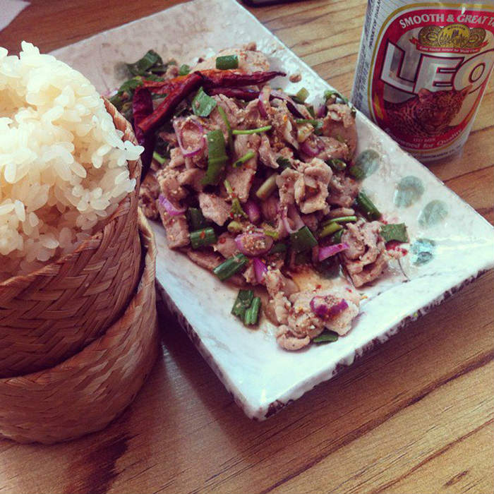
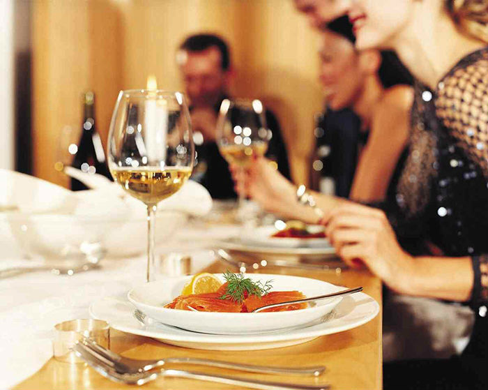
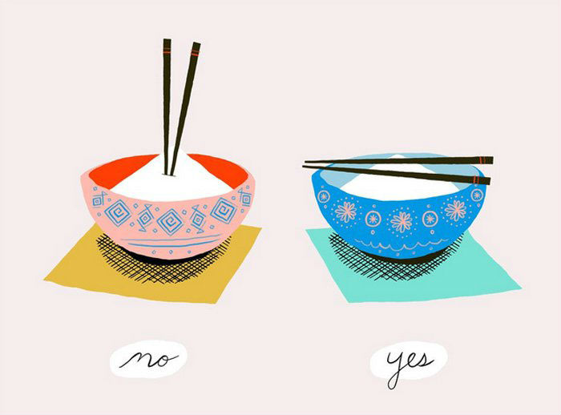

人们通常会认为泰国人在用餐时和我们一样多用筷子，但事实上，他们只有在吃带有汤水的食物时才会用到筷子。网志写手兼《The Food Traveler’s Handbook》的作家Jodi Ettenberg解释说，泰国人一般都是叉子与汤匙搭配使用的，只有少数情况下会用到筷子或手。
Nam tok moo是一道温热的泰式风味沙律，又叫「瀑布肉」 ，主要是以洋葱、辣椒、薄荷、青葱、鱼露等多种食材来搭配猪肉片，另外还会配上一小篮子的糯米饭，让你连最后一滴汁也不浪费。这道地方美味在全球50大美食排行榜上也榜上有名哦。

到日本游玩，你可能已经有长长一串想要尝试的美味，但也请一定不要错过了守候在火车站里的便当。一般来说，火车站便利店里头的便当味道并不怎么样，卖相也很一般，但日本火车站内kiosk便利店里供应的便当却精致到你立刻就会想要拿出手机拍照然后晒给朋友们看。
各位小时候有没有被爸妈教育过吃饭的时候一定要把手放在桌面上呢？如果一直没能改掉这不礼貌的习惯，那么去俄罗斯可是要小心了，事关吃饭的时候千万不要把手放在桌下，例如膝盖上，一定要放在桌边，否则会让人觉得有可疑。

之前我们在《带你领略15国的早餐文化》的文章里就有为大家介绍过意大利人最喜欢的早餐组合——牛角包与Cappuccino。 Better Way To Italy的创始人Sarah Walton表示，意大利人对什么时候该吃什么分得很清，牛奶比例较多的咖啡，例如Cappuccino，就只有在早餐时段才会选择，但如果他们正赶时间，那么就会点选Espresso来代替。至于羊角包，则各人吃法不同，有的直接吃原味，有的则会涂抹上Nutella、奶油或是果酱。如果未来要去意大利，记得体验一下当地人的早餐文化啦。
平常去吃西餐，餐包一般会配牛油或者橄榄油，甚至是意大利香脂醋之类的，但当你真正到了意大利餐厅里用餐时，请不要以为是他们忘了拿给你。除非这家餐厅在口味上特意迎合了外国游客，否则餐包一般是用来蘸意大利粉剩下的酱汁吃的。
意大利粉永远会早于肉类或蔬菜类餐点上桌，所以如果你的同伴只点了主菜，而你却点了意大利粉，那么你的菜必定会早些上。另外，很多人吃意大利菜总爱撒额外的芝士，但这是不礼貌的，而且有用到鱼肉的意大利粉是绝对不会加入芝士的。
这个我们都知道的，是非常不敬的行为。因为碗和香炉的形状像似，所以将筷子插在饭里，会很象是在烧香献给亡灵。这样的行为又称为“当众上香”，而且据说和死囚临终前的最后一顿饭，以及葬礼上给先人的脚尾饭相似。另外呢，在日本也不能用筷子来夹菜给别人，事关这和火葬后的捡骨仪式相近。

在印度，以及中东的很多地方，用左手吃饭是非常不礼貌的，至于左手要用来干什么，相信应该不用小编多言了吧？
以蟹肉和西红柿熬成汤底，再配上蟹肉猪肉丸、豆腐、米粉等食材，又鲜又香，看着就已经让人食指大动了。这是越南很人气的路边摊小吃，价格不高但满满都是本土风味。
如果去土耳其感觉东西吃不惯，那么选择Menemen吧，很多网友都表示这怎么那么像我们的西红柿炒蛋啊？顿时让身在异国的你尝到了家乡味，用来配面包吃味道还蛮不错的。另外，在土耳其享用早餐，一般当地人会喝茶来搭配，而非咖啡。鸡蛋打散的Menemen，要比鸡蛋完整的好吃~

这是一种土耳其独有的传统饮料，以兰花球茎磨成的粉加上牛奶，蜂糖，云呢拿，奶油调泡而成，最后再洒上一点肉桂粉，又甜又香，质地浓稠，而且很暖身呢。